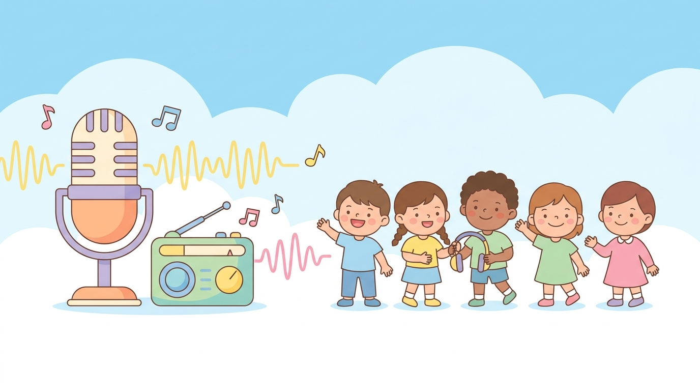

A short "phrase of the week" goes out over the school broadcast every morning — and lives here as a reusable library of clean visual cards.

How it works
Each week has a theme and a sentence pattern. Tap 🔊 on any card to hear it — exactly what students hear over the speakers.
Theme · Places
Theme · Dreams
Theme · Good Character
Why keep it here
Every card stays online, so next year's broadcast starts from a library instead of a blank page.
Students who miss the morning broadcast can replay every phrase here at their own pace.
Patterns build logically — places, dreams, character — so language grows step by step.